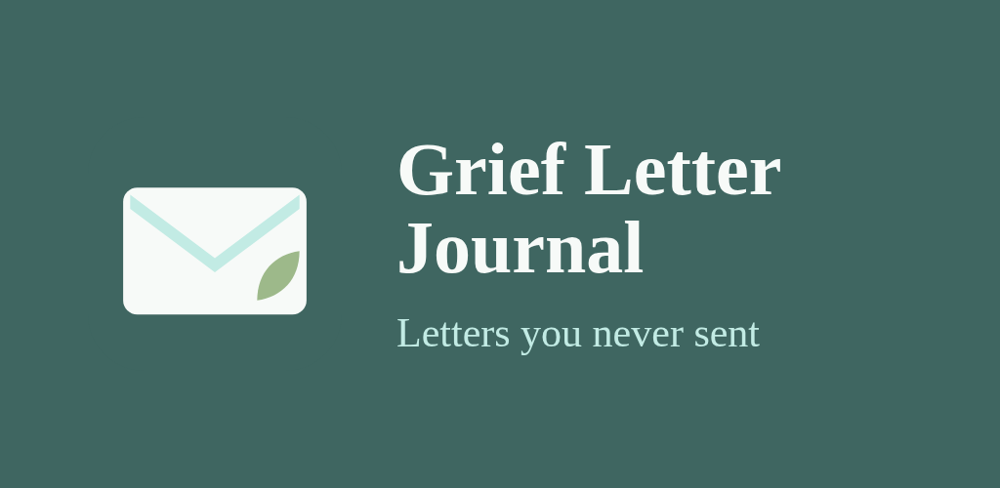
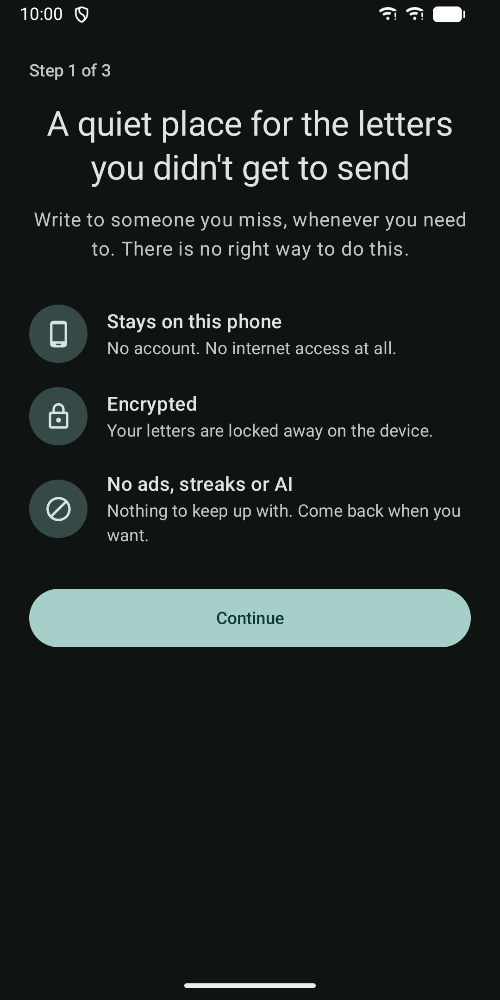
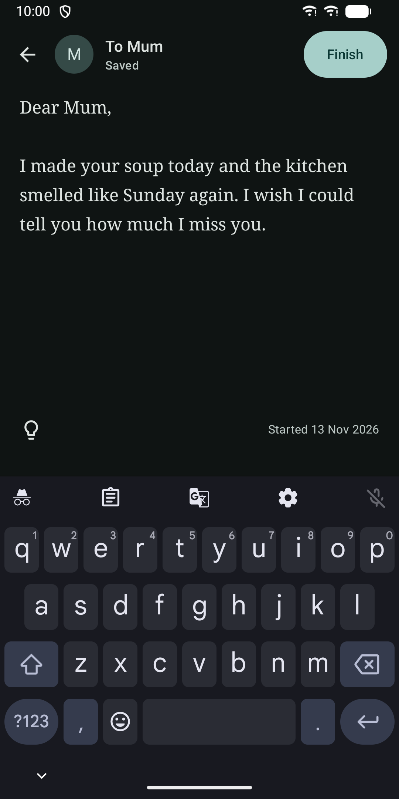
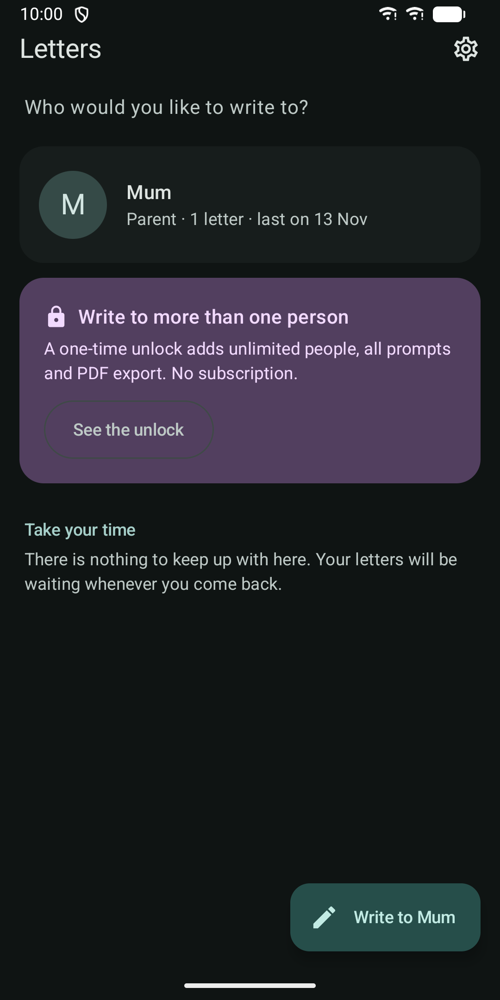
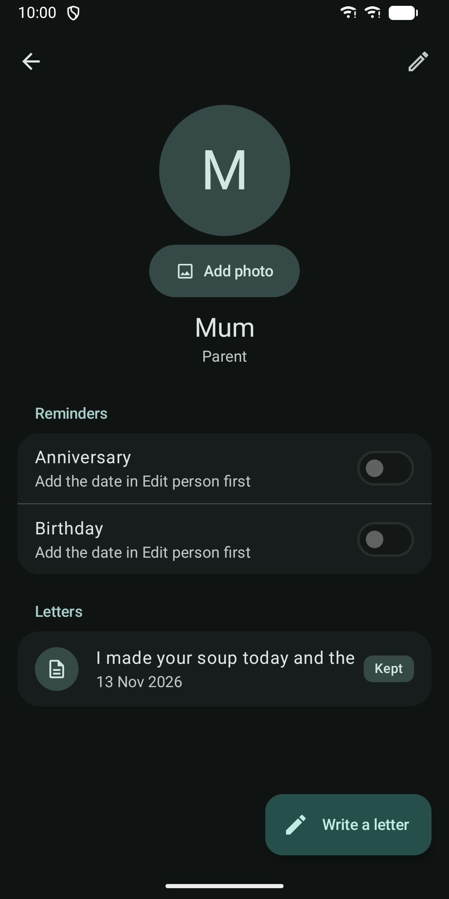
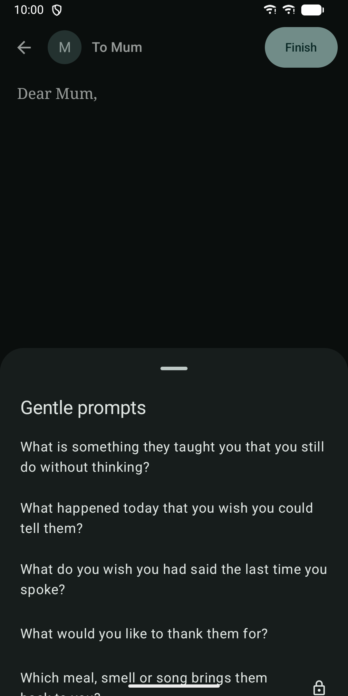
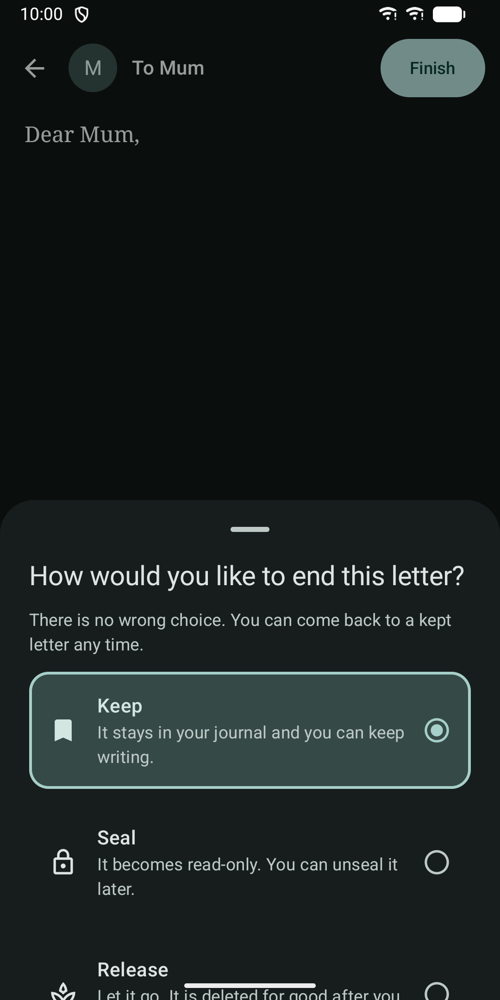
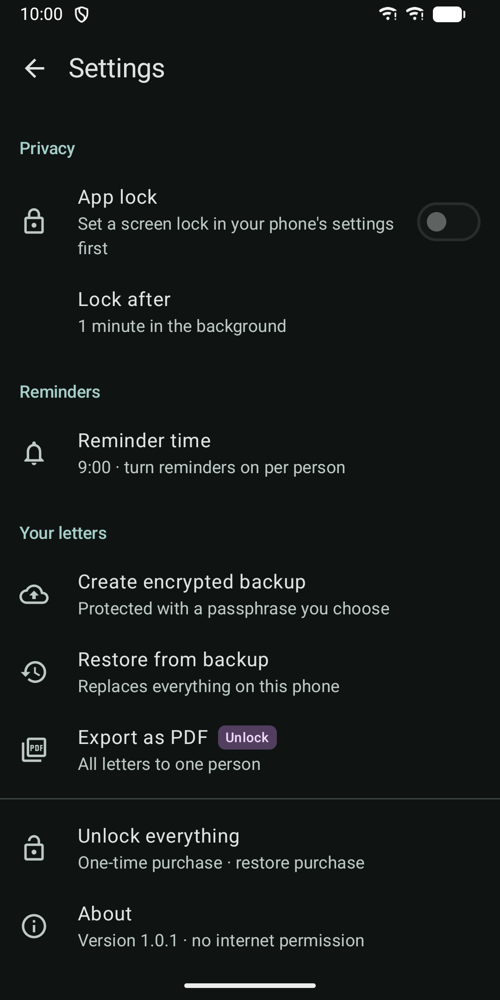

Grief Letter Journal
Write unsent letters to someone you lost. Private and encrypted on your phone.








About
Write the letters you didn't get to send. Grief Letter Journal is a quiet, private place to write unsent letters to a parent, partner, child, sibling, friend or pet you have lost. Each letter opens with "Dear [name]", saves itself as you type, and stays only on your phone. The app has no internet permission, so it cannot send your letters anywhere. There is no account, no cloud, no tracking and no AI. Write in your own time - Add the person you miss, with their relation and, if you like, their birthday and the date they died. - Add a photo if you want. It is cropped in a circle and stored encrypted, with location and camera details removed. - A plain, calm editor that saves on its own. - Gentle, optional prompts for each relation. Pets have their own prompts. - No streaks, no counters, no nagging. Come back whenever you want. End each letter your way - Keep: it stays in your journal and you can keep writing. - Seal: it becomes read-only. You can unseal it later. - Release: let it go. It is deleted for good after you confirm. Private by design - Everything is stored in an encrypted database. The key is protected by your phone's secure hardware. - Optional app lock with your fingerprint, face or device PIN. While it is on, screenshots and the recent-apps preview are blocked. - Reminders for birthdays and anniversaries are off by default. When on, the notification only says "A moment for you", never a name or a date, and it is hidden on the lock screen. - The home screen widget never shows letter text. With app lock on it only shows a plain "Write" button. - Encrypted backups protected by a passphrase you choose, saved wherever you pick. Restore them on a new phone. What is included - Available from the start: one person, basic prompts, reminders, app lock, and encrypted backup and restore. - Needs the one-time unlock in the app: more than one person, all prompts, and PDF export of one letter or all letters to one person. It is not a subscription. The purchase is checked by the Google Play Store app. Grief Letter Journal itself still has no internet permission. This app is not a replacement for professional support. If you are struggling, please reach out to someone you trust or a local support service.